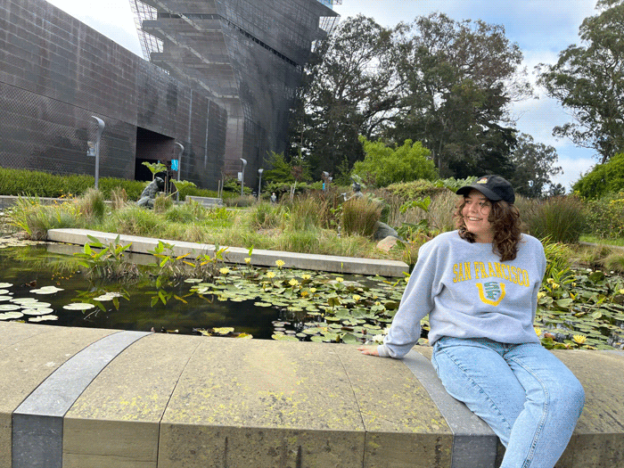
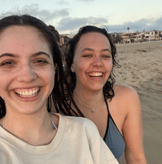
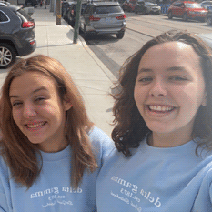
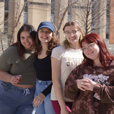
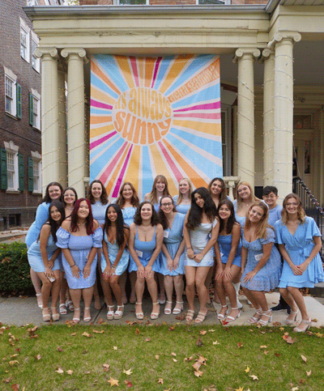
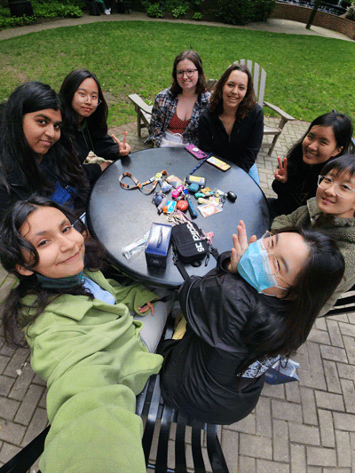

About
Personal
Hi, I'm Hannah Desmond! I am originally from Los Angeles, California but am now located in Philadelphia.
Growing up, my parents immersed me in creativity. Because of this I developed a love of exploring the different ways I can apply my creativity. I play guitar, paint, draw, sing, design, write, read, and dance. With every new form of expression, I find more and more enjoyment in life. When I moved to Philadelphia, I wanted to find a smaller community within Drexel University. So I decided to join Delta Gamma, a sorority on campus. Since joining, I have made lifelong friends and a home away from home. I love going out, studying, and exploring Philadelphia with my sisters!
  Professional
I am currently a student at Drexel University. I'm studying User Experience and Interaction Design with a tight knit group of people. I enjoy being a part of a smaller major that I can connect with and get feedback from.
Currently I am on the recruitment team of my sorority. I help run events, fundraise, and promote my sisterhood across campus. Working on a team, we train our sisters on recruiting new members and educating the chapter on our histories and values.
 I've gained a lot of experience in communication and forward thinking in this position. I have also been able to put into practice my enjoyment and knowledge of design through the creation of different graphics, posters, and activity sheets.
Prior to college I was on my High Schools improv team. I was the team manager, organizing games with other schools, special events, training new team members, and coaching my friends on performance. Due to this experience, I am comfortable in front of people presenting ideas and helpful criticisms.
Over the summer of 2023 I got my first job in a professional setting. I was a camp counselor at Steve and Kate's camp Pasadena. There I worked with kids from the ages of four to fourteen. I was a support counselor and would walk through the different areas, staying where I was needed most. This allowed me to build up my adaptability and quick thinking as the problems I had to deal with varied drastically based on the age group I was talking to. It was a great experience and I loved working with the kids there.
In the future, I hope to apply the skills I will learn here at Drexel to a position that works in one of my several areas of interest. I want to find a cause I care deeply about and be able to aid its foundations with my skills.